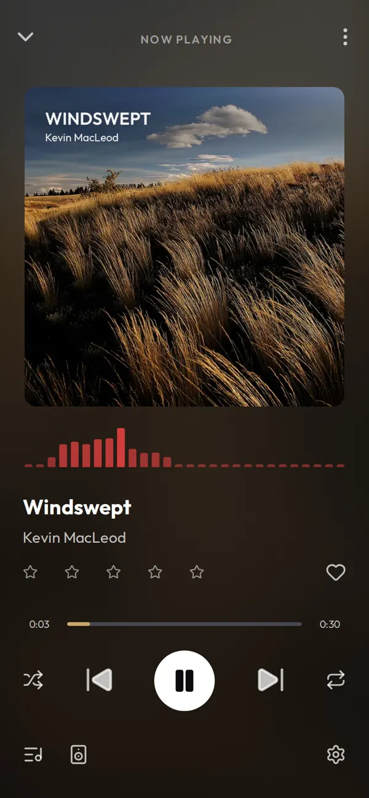
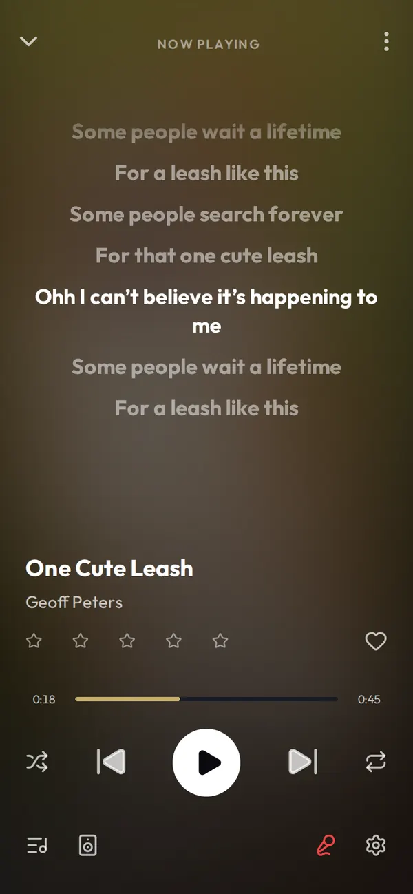

Android
For Android 9 or newer. You install the APK yourself; it isn't in an app store.
Install
- Download
aura-<version>.apkfrom Download on the phone and open it. - Allow installing from that app when Android asks (Install unknown apps), then tap Install.
- If Play Protect warns about an unknown app, choose More details → Install anyway.
To update, install the newer APK over the old one; you stay signed in.
Connect to your server
- On the first screen choose A server.
- On a computer, open Aura at its network address and open Devices in the profile menu.
- In the app tap Scan QR code, scan it and tap Sign in. No password needed: the code works once, for 2 minutes. Or type the address and sign in.
Phone mode
Choose This phone on the first screen and Aura plays the music and videos already on the phone, with no server. Switch later in Settings → General → Library. Phone mode remembers up to five servers, each one tap away with its own sign-in.
Downloads and offline
- On an album or playlist, tap ↓ next to its ♥.
- Find them in Favorites → Downloads; they play without a connection.
Settings → Playback → Download Quality sets their quality; downloads wait for Wi-Fi unless Download on Mobile Data is on.


More: Installing the Android app · Downloads